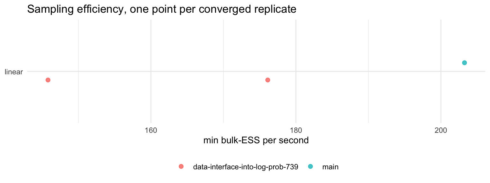
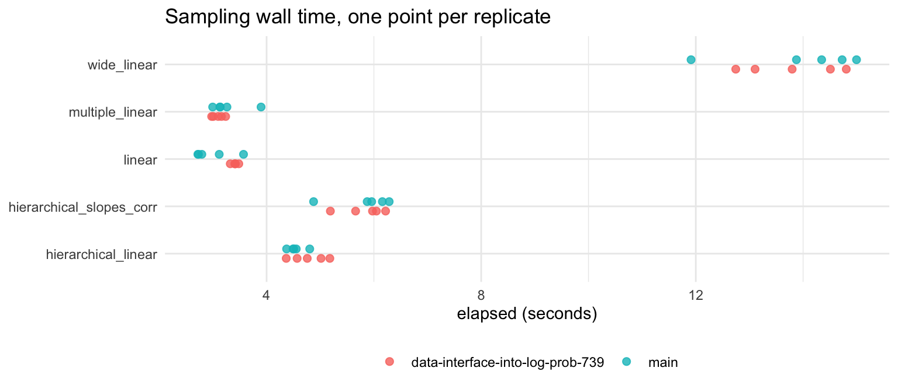
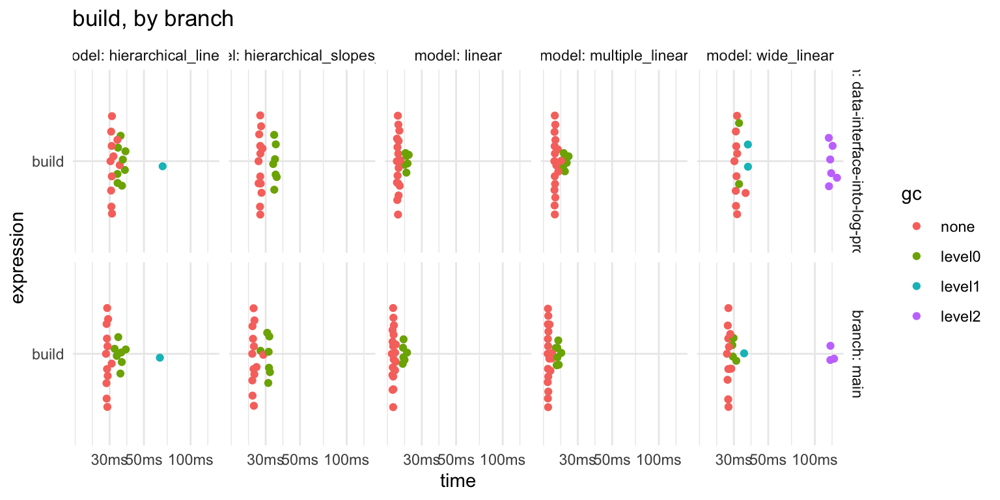
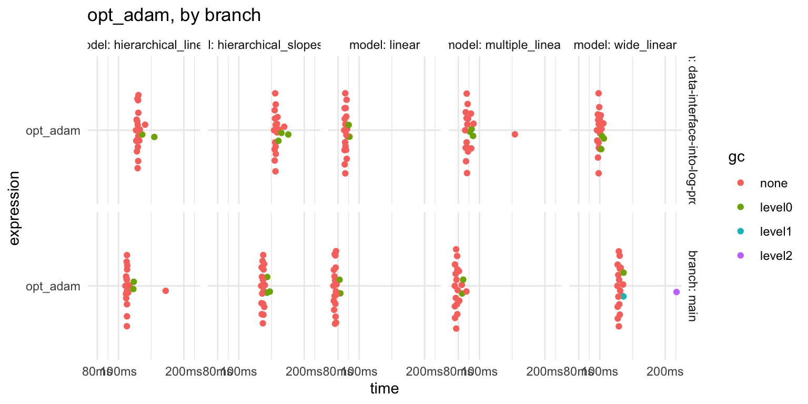

| role | branch | sha |
|---|---|---|
| reference | main | 280dc9068b |
| under test | data-interface-into-log-prob-739 | 7875a3799d |
MCMC suite: data nodes as tf$Variable
4 chains, 1000 warmup, 1000 samples, 5 replicates per model; 20 iterations for the deterministic tier. These are greta’s own defaults for sampler, n_samples and warmup, so this is what a user gets without asking for anything.
What is being measured
Three tasks across two tiers. mcmc() and opt() share almost no code in greta, so a change to one is invisible to the other, and build is the graph construction both of them depend on.
| task | call | what it exercises |
|---|---|---|
build |
the model function, ending in model() |
defining the greta arrays and constructing the DAG, which is where the TensorFlow graph and its pointers are created. The cost paid once, before any inference |
opt_adam |
opt(m, optimiser = adam(), max_iterations = 100) |
100 iterations of maximum-likelihood optimisation |
| sampling | mcmc(m, chains, warmup, n_samples) |
greta’s default hmc() sampler |
Why adam(), when opt() defaults to bfgs()
This is the one choice here that is not the default a user gets, so it needs a reason. greta has two kinds of optimiser, and they differ in who drives the loop:
adam()is atf_optimiser- a Keras optimiser that greta steps through from awhileloop in R, crossing into TensorFlow once per iteration. Atmax_iterations = 100that is exactly 100 round trips, the same work on every run and on every branch.bfgs()is atfp_optimiser- TFP runs the whole loop inside the TensorFlow graph and stops when it hitstolerance = 1e-6. The iteration count then depends on the data and the starting point, so timing it measures how quickly that model happened to converge.
bench::mark() needs each iteration to be the same amount of work, so adam() is the one that can be timed honestly. The cost of that choice is worth stating plainly: the deterministic tier does not measure the default opt() path, and a change touching only tfp_optimiser would not show up here at all.
Are the diagnostics trustworthy?
An earlier version of this harness reshaped greta’s mcmc.list by hand and scrambled chains against variables, so the Rhat it reported described the reshape rather than the sampler. Everything below rests on that not happening again, so 00-check-diagnostics.R tests it. All 4 groups of checks pass:
- the coercion
posterior::as_draws_array()preserves dimensions, variable names, and every draw element for element - four iid normal chains give Rhat 1.002 and bulk-ESS 1986, so the estimator is being called correctly
- four chains parked at different modes give Rhat 2.84, so it can fail
- the old by-hand reshape, reproduced deliberately and run on chains known to be good, turns Rhat 1 and bulk-ESS 1927 into Rhat 2.41 and bulk-ESS
- That is the signature recorded against the original bug, and the coercion in use does not produce it.
posterior::rhat() is rank-normalised and folded; coda’s psrf[, 1] is the classic estimator. They are different statistics, and only the first is in results.rds, so it is worth seeing them side by side on the same draws:
| variable | rhat_posterior | rhat_coda_point | rhat_coda_upper |
|---|---|---|---|
| int | 2.4225 | 3.5130 | 6.0123 |
| coef | 1.1264 | 1.1890 | 1.4873 |
| sd | 1.0018 | 1.0048 | 1.0144 |
The two estimators differ in magnitude - they are not the same statistic, and should not be expected to agree to a decimal place. What matters is that they agree on the verdict, and on which way the difference runs: on the worst variable the rank-normalised statistic reads 2.42 where coda’s classic point estimate reads 3.51. The number in results.rds is the lower of the two, so nothing there is inflated by the choice of statistic. coda’s upper confidence limit psrf[, 2] is higher again at 6.01, which is why it is not what anyone should quote - an error already recorded against greta #790.
Did the chains converge?
Thresholds are from Vehtari et al. (2021):
- Rhat < 1.01,
- bulk-ESS > 400,
- at least four chains.
Failures here cannot be compared on speed. A chain that did not converge is not a fast chain.
Reported as a distribution across replicates, not a worst case: quoting min(ESS) and max(rhat) across five runs turns one bad replicate into an apparent total failure.
| branch | model | vars | reps | converged | median min-ESS | median med-ESS | median max-Rhat |
|---|---|---|---|---|---|---|---|
| data-interface-into-log-prob-739 | hierarchical_linear | 6 | 5 | 0 | 142 | 304 | 1.028 |
| data-interface-into-log-prob-739 | hierarchical_slopes_corr | 13 | 5 | 0 | 8 | 15 | 1.419 |
| data-interface-into-log-prob-739 | linear | 3 | 5 | 2 | 378 | 393 | 1.012 |
| data-interface-into-log-prob-739 | multiple_linear | 8 | 5 | 0 | 61 | 193 | 1.079 |
| data-interface-into-log-prob-739 | wide_linear | 202 | 5 | 0 | 14 | 1797 | 1.225 |
| main | hierarchical_linear | 6 | 5 | 0 | 41 | 59 | 1.083 |
| main | hierarchical_slopes_corr | 13 | 5 | 0 | 11 | 21 | 1.310 |
| main | linear | 3 | 5 | 1 | 173 | 182 | 1.017 |
| main | multiple_linear | 8 | 5 | 0 | 71 | 319 | 1.048 |
| main | wide_linear | 202 | 5 | 0 | 12 | 2916 | 1.377 |
Three things that table says, and one it does not:
- 3 of 50 runs passed both thresholds, so 47 are dropped from every comparison below.
- The two thresholds fail together rather than separately: 44 of the 47 failures miss both, with 2 failing on ESS alone and 1 on Rhat alone. Neither is the binding constraint - a run that mixes badly enough to miss one misses the other.
- Only linear ever passes. The other 4 models fail on every replicate, on both branches.
What it does not say is that the gate is not the same test for every model. It asks every variable to clear 400, which is 3 variables for linear and 202 for wide_linear. The wide model is being asked a much harder question under the same label.
That shows up in the gap between the two ESS columns above: on wide_linear the median across variables is 2817 while the minimum is 13. The model as a whole mixes; a handful of its parameters do not. The harness does not record which parameters, which is the first thing to add.
The raw data
Every replicate, so the summaries above can be checked against what was actually measured.
| branch | model | rep | elapsed | vars | ess_bulk_min | ess_bulk_median | ess_tail_min | n_below_400 | rhat_max |
|---|---|---|---|---|---|---|---|---|---|
| data-interface-into-log-prob-739 | hierarchical_linear | 1 | 5.02 | 6 | 296.7 | 431.3 | 325.0 | 3 | 1.007 |
| data-interface-into-log-prob-739 | hierarchical_linear | 2 | 4.37 | 6 | 22.7 | 30.4 | 55.8 | 5 | 1.132 |
| data-interface-into-log-prob-739 | hierarchical_linear | 3 | 4.76 | 6 | 261.1 | 390.1 | 196.1 | 3 | 1.023 |
| data-interface-into-log-prob-739 | hierarchical_linear | 4 | 5.18 | 6 | 74.0 | 210.8 | 79.0 | 5 | 1.049 |
| data-interface-into-log-prob-739 | hierarchical_linear | 5 | 4.57 | 6 | 141.8 | 304.2 | 190.6 | 4 | 1.028 |
| main | hierarchical_linear | 1 | 4.80 | 6 | 41.5 | 59.1 | 76.2 | 5 | 1.083 |
| main | hierarchical_linear | 2 | 4.55 | 6 | 30.6 | 54.7 | 62.2 | 5 | 1.111 |
| main | hierarchical_linear | 3 | 4.49 | 6 | 16.5 | 38.9 | 77.0 | 5 | 1.186 |
| main | hierarchical_linear | 4 | 4.51 | 6 | 152.3 | 224.8 | 201.6 | 5 | 1.039 |
| main | hierarchical_linear | 5 | 4.37 | 6 | 76.8 | 129.0 | 207.4 | 5 | 1.064 |
| data-interface-into-log-prob-739 | hierarchical_slopes_corr | 1 | 6.05 | 13 | 8.3 | 18.9 | 15.6 | 10 | 1.453 |
| data-interface-into-log-prob-739 | hierarchical_slopes_corr | 2 | 5.97 | 13 | 10.7 | 15.2 | 23.9 | 10 | 1.311 |
| data-interface-into-log-prob-739 | hierarchical_slopes_corr | 3 | 6.22 | 13 | 8.4 | 15.5 | 11.0 | 11 | 1.419 |
| data-interface-into-log-prob-739 | hierarchical_slopes_corr | 4 | 5.19 | 13 | 8.6 | 23.3 | 22.3 | 10 | 1.409 |
| data-interface-into-log-prob-739 | hierarchical_slopes_corr | 5 | 5.66 | 13 | 7.1 | 11.8 | 19.2 | 10 | 1.578 |
| main | hierarchical_slopes_corr | 1 | 6.28 | 13 | 13.9 | 20.8 | 33.1 | 10 | 1.240 |
| main | hierarchical_slopes_corr | 2 | 4.88 | 13 | 6.6 | 9.2 | 19.5 | 10 | 1.675 |
| main | hierarchical_slopes_corr | 3 | 6.16 | 13 | 11.0 | 15.6 | 6.9 | 12 | 1.310 |
| main | hierarchical_slopes_corr | 4 | 5.88 | 13 | 17.0 | 35.3 | 15.1 | 10 | 1.204 |
| main | hierarchical_slopes_corr | 5 | 5.96 | 13 | 9.2 | 22.9 | 21.3 | 12 | 1.365 |
| data-interface-into-log-prob-739 | linear | 1 | 3.42 | 3 | 190.7 | 202.8 | 281.0 | 2 | 1.016 |
| data-interface-into-log-prob-739 | linear | 2 | 3.41 | 3 | 496.8 | 525.1 | 801.4 | 0 | 1.007 |
| data-interface-into-log-prob-739 | linear | 3 | 3.48 | 3 | 613.2 | 632.4 | 1149.7 | 0 | 1.003 |
| data-interface-into-log-prob-739 | linear | 4 | 3.41 | 3 | 378.4 | 392.9 | 561.9 | 2 | 1.014 |
| data-interface-into-log-prob-739 | linear | 5 | 3.32 | 3 | 158.3 | 168.0 | 253.5 | 2 | 1.012 |
| main | linear | 1 | 3.12 | 3 | 395.1 | 418.3 | 598.2 | 1 | 1.007 |
| main | linear | 2 | 3.57 | 3 | 725.6 | 739.3 | 1220.0 | 0 | 1.006 |
| main | linear | 3 | 2.73 | 3 | 82.9 | 86.0 | 190.2 | 2 | 1.040 |
| main | linear | 4 | 2.72 | 3 | 134.7 | 138.2 | 332.0 | 2 | 1.034 |
| main | linear | 5 | 2.79 | 3 | 172.6 | 181.6 | 341.2 | 2 | 1.017 |
| data-interface-into-log-prob-739 | multiple_linear | 1 | 2.98 | 8 | 39.3 | 92.3 | 100.6 | 8 | 1.079 |
| data-interface-into-log-prob-739 | multiple_linear | 2 | 3.16 | 8 | 61.1 | 194.2 | 120.8 | 7 | 1.089 |
| data-interface-into-log-prob-739 | multiple_linear | 3 | 3.01 | 8 | 23.0 | 157.3 | 27.2 | 7 | 1.146 |
| data-interface-into-log-prob-739 | multiple_linear | 4 | 3.24 | 8 | 75.6 | 296.3 | 156.1 | 6 | 1.053 |
| data-interface-into-log-prob-739 | multiple_linear | 5 | 3.10 | 8 | 66.0 | 193.0 | 87.6 | 7 | 1.076 |
| main | multiple_linear | 1 | 3.90 | 8 | 72.2 | 318.9 | 107.7 | 5 | 1.035 |
| main | multiple_linear | 2 | 3.14 | 8 | 66.3 | 224.0 | 104.5 | 7 | 1.065 |
| main | multiple_linear | 3 | 3.13 | 8 | 70.9 | 344.5 | 167.4 | 7 | 1.039 |
| main | multiple_linear | 4 | 3.26 | 8 | 86.5 | 358.2 | 163.9 | 5 | 1.048 |
| main | multiple_linear | 5 | 3.00 | 8 | 13.8 | 222.7 | 45.5 | 7 | 1.235 |
| data-interface-into-log-prob-739 | wide_linear | 1 | 14.51 | 202 | 13.9 | 1797.1 | 20.4 | 14 | 1.225 |
| data-interface-into-log-prob-739 | wide_linear | 2 | 13.11 | 202 | 288.9 | 3234.8 | 141.7 | 1 | 1.098 |
| data-interface-into-log-prob-739 | wide_linear | 3 | 14.80 | 202 | 40.6 | 2811.7 | 64.6 | 1 | 1.065 |
| data-interface-into-log-prob-739 | wide_linear | 4 | 12.74 | 202 | 5.5 | 428.2 | 17.7 | 88 | 1.954 |
| data-interface-into-log-prob-739 | wide_linear | 5 | 13.80 | 202 | 7.3 | 400.5 | 21.1 | 101 | 1.522 |
| main | wide_linear | 1 | 13.88 | 202 | 45.0 | 2988.3 | 22.1 | 2 | 1.377 |
| main | wide_linear | 2 | 15.00 | 202 | 8.6 | 3498.1 | 33.9 | 6 | 1.392 |
| main | wide_linear | 3 | 14.73 | 202 | 8.6 | 2915.8 | 35.2 | 13 | 1.393 |
| main | wide_linear | 4 | 14.35 | 202 | 11.7 | 1268.9 | 48.0 | 21 | 1.261 |
| main | wide_linear | 5 | 11.91 | 202 | 661.3 | 2821.4 | 100.5 | 0 | 1.119 |
Sampling efficiency
Effective samples per second, on the converged runs only.
| model | branch | runs | median | min | max |
|---|---|---|---|---|---|
| linear | data-interface-into-log-prob-739 | 2 | 161.0 | 145.8 | 176.1 |
| linear | main | 1 | 203.3 | 203.3 | 203.3 |
Is the difference resolved?
A ratio of medians sitting inside a spread wider than the effect is not a finding, so this table is the one to read before the ratio.
| model | ratio | runs on the thinner branch | verdict |
|---|---|---|---|
| linear | 0.79 | 1 | too few runs to say |
With 1 converged run on one branch and 2 on the other, there is no comparison here to make. The gate is doing its job; there is almost nothing left after it.

Wall time, for attribution
A gain in effective samples per second is only a sampling gain if the sampler did not simply run longer or shorter. Tier 2 comes from run_branches() rather than bench::mark(), so there is no bench_mark object to summarise here and no columns bench computed - these are the raw elapsed seconds from every replicate.

Deterministic tier: build and optimise
This half is bench::mark() through cross::bench_branches(), so bench’s own summary and plot apply - and unlike the sampling tier, every cell here has a result.
summary(relative = TRUE) normalises against the single fastest row in whatever it is handed. Given the whole table it compares opt_adam on one model against build on another, which is not a comparison anybody wants. So it is applied per model and per expression, where the only thing varying is the branch.
| model | expression | main (ms) | data-interface-into-log-prob-739 (ms) | main (rel) | data-interface-into-log-prob-739 (rel) |
|---|---|---|---|---|---|
| linear | build | 19.6 | 21.2 | 1.000 | 1.078 |
| linear | opt_adam | 77.6 | 86.5 | 1.000 | 1.115 |
| multiple_linear | build | 19.3 | 21.3 | 1.000 | 1.105 |
| multiple_linear | opt_adam | 78.6 | 88.0 | 1.000 | 1.119 |
| hierarchical_linear | build | 28.9 | 31.0 | 1.000 | 1.072 |
| hierarchical_linear | opt_adam | 109.4 | 122.7 | 1.000 | 1.122 |
| hierarchical_slopes_corr | build | 25.1 | 27.7 | 1.000 | 1.104 |
| hierarchical_slopes_corr | opt_adam | 129.3 | 147.8 | 1.000 | 1.143 |
| wide_linear | build | 27.6 | 31.1 | 1.000 | 1.126 |
| wide_linear | opt_adam | 122.7 | 98.9 | 1.241 | 1.000 |
What the relative columns mean
The faster branch in each row is 1.000 and the other is its multiple, so a relative of 1.126 means 12.6% slower. Every percentage below is (relative - 1) * 100 computed from this table, never typed in. The absolute millisecond columns are there too, because a given percentage of a 19 ms build and of a 148 ms optimisation are not the same size of problem.
Within each row the slower branch is the one above 1. Reading down the relative columns:
buildis slower on data-interface-into-log-prob-739 in 5 of 5 models, by 7 to 13 per cent.opt_adamis slower in 4 of 5 models, by up to 14 per cent. The exception is wide_linear, where the branch is 24 per cent faster - the one cell pointing the other way, and the one with the most real gradient work in it.- Unlike the sampling tier, every one of these 10 cells has a number, because the work is deterministic and there is no convergence gate to fail.
Is the deterministic difference resolved?
The sampling tier has a resolution check and this one did not, which is the wrong way round: this is the half with a finding in it. Each bench::mark() cell holds its own per-iteration times, so the within-branch spread is already measured and does not need a separate A/A run. Quartiles rather than min-max, because a single slow iteration should not widen a branch’s interval enough to swallow the effect.
| model | expression | difference (ms) | main IQR (ms) | data-interface-into-log-prob-739 IQR (ms) | spread / effect | verdict |
|---|---|---|---|---|---|---|
| linear | build | 1.5 | 19.6 - 20.4 | 21 - 22.5 | 1.0 | resolved |
| linear | opt_adam | 8.9 | 77.1 - 78.3 | 86.1 - 87.6 | 0.2 | resolved |
| multiple_linear | build | 2.1 | 19.2 - 21.6 | 21.3 - 23.8 | 1.2 | unresolved |
| multiple_linear | opt_adam | 9.2 | 77.8 - 80.6 | 87.3 - 91.5 | 0.5 | resolved |
| hierarchical_linear | build | 4.4 | 28.9 - 34.4 | 31 - 35.5 | 1.2 | unresolved |
| hierarchical_linear | opt_adam | 13.5 | 109.1 - 110 | 122 - 123.9 | 0.1 | resolved |
| hierarchical_slopes_corr | build | 2.6 | 25 - 30.8 | 27.7 - 34.1 | 2.5 | unresolved |
| hierarchical_slopes_corr | opt_adam | 18.4 | 128.1 - 130.8 | 146.8 - 151.1 | 0.2 | resolved |
| wide_linear | build | 4.1 | 27.6 - 30.2 | 31.2 - 123.1 | 22.5 | resolved |
| wide_linear | opt_adam | -24.0 | 121.7 - 125 | 98.6 - 101.2 | 0.1 | resolved |
The last two columns are read together. The verdict says whether the branches separate at all; the ratio says whether the size of the difference means anything, and a ratio far above 1 means a cell can be read for direction only.
- All 5
opt_adamcells resolve, at ratios of 0.1 to 0.5. Differences of 8.9 to 24 ms against IQRs a few ms wide, so both the direction and the size hold up. - Only 2 of 5
buildcells resolve, at ratios up to 22.5. Differences of 1.5 to 4.4 ms, so per cell the effect mostly sits inside the spread.
So the build penalty should not be quoted from any single model. What supports it is direction: the branch is slower in all 5 of 5 models, which under a null of no difference is a one in 32 result. That is a real effect too small for this number of iterations to resolve cell by cell, not an absent one - and raising GRETA_SUITE_ITERATIONS is what would settle it.
The extreme case is wide_linear / build on data-interface-into-log-prob-739: an IQR of 31.2 to 123.1 ms, a 4-fold spread that no other cell comes near. It separates from the reference, so the direction stands, but a middle quartile spanning 92 ms cannot support a 4.1 ms claim - hence a ratio of 22.5. This is the largest model in the set and the one whose build allocates most, so the spread is more likely a property of the cell than an accident of when it ran.
The distributions behind those medians
One plot per expression, so each compares the two branches on like work rather than putting build and opt_adam on a shared axis.


Provenance
List of 5
$ run_at : chr "2026-09-21 14:56:33 AEST"
$ cpu : chr "Apple M3"
$ cores : int 8
$ platform:List of 11
..$ version : chr "R version 4.6.1 (2026-06-24)"
..$ os : chr "macOS Tahoe 26.5.2"
..$ system : chr "aarch64, darwin23"
..$ ui : chr "X11"
..$ language: chr "(EN)"
..$ collate : chr "en_AU.UTF-8"
..$ ctype : chr "en_AU.UTF-8"
..$ tz : chr "Australia/Hobart"
..$ date : chr "2026-09-21"
..$ pandoc : chr "3.10 @ /opt/homebrew/bin/pandoc"
..$ quarto : chr "1.9.36 @ /usr/local/bin/quarto"
..- attr(*, "class")= chr [1:2] "platform_info" "list"
$ packages:Classes 'packages_info' and 'data.frame': 4 obs. of 11 variables:
..$ package : chr [1:4] "bench" "cross" "reticulate" "tensorflow"
..$ ondiskversion: chr [1:4] "1.1.4" "0.0.0.9000" "1.47.0" "2.20.0"
..$ loadedversion: chr [1:4] "1.1.4" "0.0.0.9000" NA NA
..$ path : chr [1:4] "/Library/Frameworks/R.framework/Versions/4.6/Resources/library/bench" "/Library/Frameworks/R.framework/Versions/4.6/Resources/library/cross" "/Library/Frameworks/R.framework/Versions/4.6/Resources/library/reticulate" "/Library/Frameworks/R.framework/Versions/4.6/Resources/library/tensorflow"
..$ loadedpath : chr [1:4] "/Library/Frameworks/R.framework/Versions/4.6/Resources/library/bench" "/Library/Frameworks/R.framework/Versions/4.6/Resources/library/cross" NA NA
..$ attached : logi [1:4] TRUE TRUE FALSE FALSE
..$ is_base : logi [1:4] FALSE FALSE FALSE FALSE
..$ date : chr [1:4] "2025-01-16" "2026-08-05" "2026-09-03" "2025-08-22"
..$ source : chr [1:4] "CRAN (R 4.6.0)" "Github (DavisVaughan/cross@1a0db276e1f14b404efa6305b7890ffe24690f1d)" "CRAN (R 4.6.1)" "CRAN (R 4.6.0)"
..$ md5ok : logi [1:4] NA NA NA NA
..$ library : Factor w/ 2 levels "/Users/nick_1/Library/R/arm64/4.6/library",..: 2 2 2 2